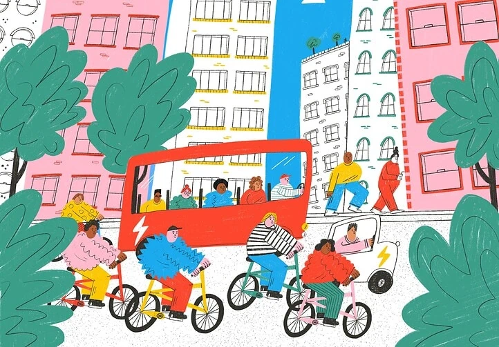

Il decreto del maggio 2025 sulla continuità produttiva dell'ex Ilva di Taranto, sostiene l'analisi, non risponde a un'urgenza reale ma istituzionalizza una sospensione strutturale delle tutele costituzionali su lavoro, ambiente e retribuzione, in contrasto con gli articoli 3, 32 e 36 della Costituzione.

A partire dal numero clandestino di Avanti! del 15 maggio 1944, l'analisi ricostruisce la crisi napoletana culminata nel secondo governo Badoglio, dove la svolta di Salerno di Togliatti segnò la subordinazione della strategia comunista all'unità nazionale.

Dietro il linguaggio della sostenibilità del progetto C40, l'analisi rintraccia il coinvolgimento dell'Open Society Foundations e, richiamando le distopie urbane di Metropolis e Blade Runner, mostra come sicurezza e tecnologia si intreccino in un'urbanistica del controllo.
Mentre il parlamento europeo approva la legge sulla libertà dei media che consente il controllo dei giornalisti tramite spyware, la Cina accelera lo sviluppo del 6G, presentato come piattaforma di intelligenza collettiva connessa.
Il crollo dell'indice PMI tedesco segna, secondo l'analisi, l'ingresso dell'Europa in recessione mentre il baricentro economico globale si sposta verso i BRICS, con la Cina che finanzia lo sviluppo indipendente dei chip di Huawei aggirando le sanzioni occidentali.